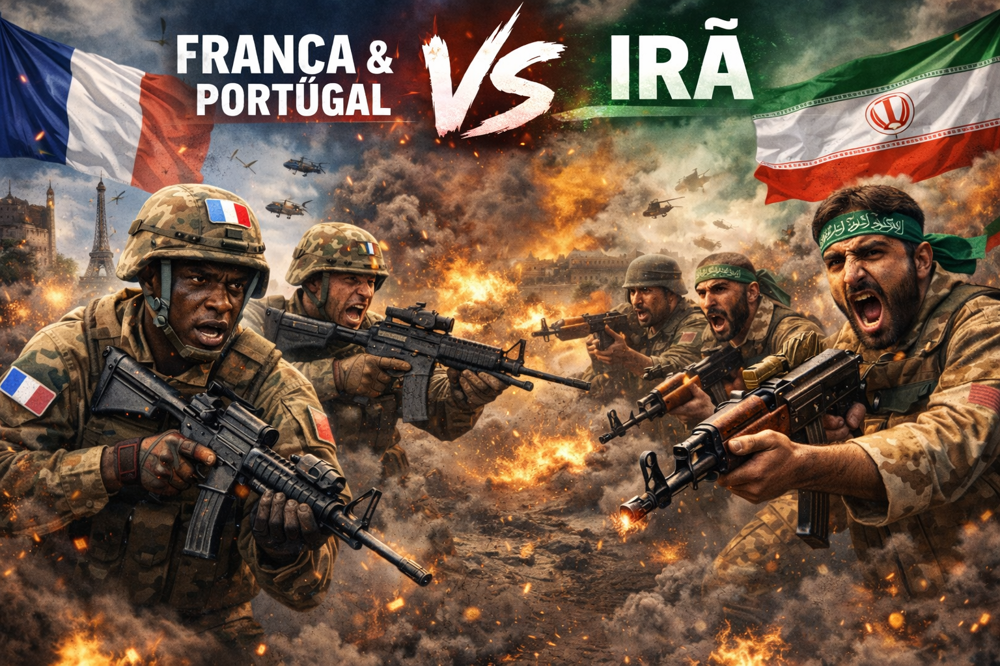

França e Portugal poderiam justificar um conflito com o Irã citando preocupações com a segurança internacional e o cumprimento de acordos globais. Um dos principais argumentos seria o programa nuclear iraniano e o receio de que ele possa ser usado para fins militares. A França, como potência militar e membro permanente do Conselho de Segurança da ONU, frequentemente participa de debates sobre não proliferação nuclear. O país poderia afirmar que um Irã com capacidade nuclear militar representaria risco para a estabilidade mundial. Outro ponto seria a participação em alianças e missões internacionais. Tanto França quanto Portugal fazem parte da Organização do Tratado do Atlântico Norte, o que pode levá-los a apoiar ações coletivas ao lado de aliados em situações de crise. A proteção de rotas comerciais e energéticas também poderia ser citada. Grande parte do comércio internacional de petróleo passa pelo Golfo Pérsico, e tensões na região podem afetar diretamente a economia europeia. A França também tem presença militar e interesses estratégicos em algumas regiões do Oriente Médio e do Oceano Índico. Isso poderia ser usado como argumento para justificar ações voltadas à proteção de seus cidadãos e interesses. Portugal, por sua vez, poderia justificar sua participação principalmente por meio de compromissos com aliados internacionais e operações multilaterais. Além disso, ambos os países poderiam apresentar sua posição como parte de um esforço internacional para preservar a estabilidade regional, evitar a expansão de conflitos e defender princípios de segurança coletiva e cooperação entre nações.
